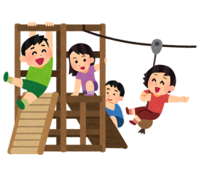

日常的(にちじょうてき)に家族(かぞく)の介護(かいご)・世話(せわ)を過度(かど)に行(おこな)い 大(おお)きな責任(せきにん)や負担(ふたん)を背負(せお)っている 18歳(さい)未満(みまん)の子供(こども)や若者(わかもの)を指(さ)します
中学生(ちゅうがくせい)の内(うち)、17人(にん)に1人(り)が家族(かぞく)の世話(せわ)をしている！ （1クラスに1人(り)いるかも？）
等

24時間365日チャットで相談できる ヤングケアラーに向けたAIチャットを開設！
一緒にヤングケアラーを減らすためのお手伝いをしませんか？
子ども食堂・募金活動 など
AIチャットで集めた情報をまとめ、市に請願、陳情を行う
ヤングケアラー授業講師 など
説明はフォームの説明欄を確認してください